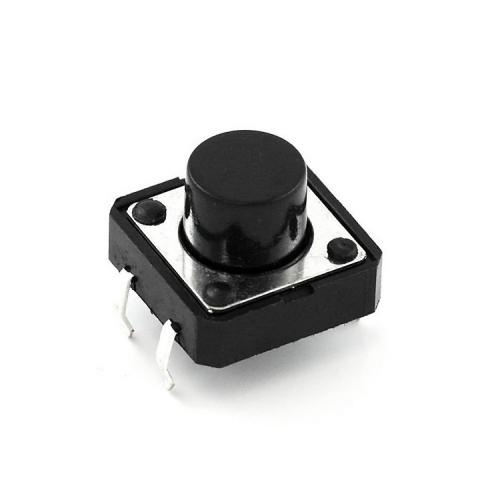

Botão

Descrição do Produto
KCF-A06, Arduino, Botão pulsador utilizado comumente para dar ordem de acionamento em determinados projetos ou equipamentos ativados geralmente sempre que pulsados
Detalhes do Produto
- Modelo: KFC-A06 4T 180°C
- Voltagem maxima: 12V
- Quantidade de terminais: 4
- Corrente Máxima: 0,5A
- Dimensões(CxLxA): 06x06x4,3mm
- Peso: 0,3g